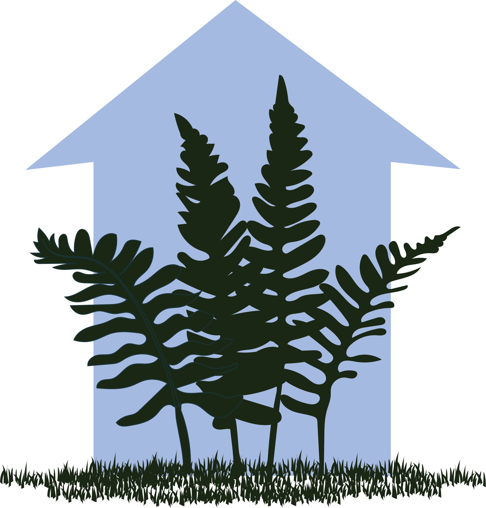

DANIELA
AROS MUALIN
Welcome! I am a botanist from Chile, currently doing a PhD at
the
University of Zurich
in the lab of
Dr. Michael Kessler
. My research interest are fern ecophysiology and ecology,
specifically how plant water-carbon relations changes with their
environment, and better yet if I can study this from an
evolutionary standpoint. This is what encourage me to study
ferns since they are an ancient plant lineage that is severely
understud
ied.
Research topics
Water relations

Functional diversity
BLABLABLA
Circadian rhythms
Publications
- 1. Aros-Mualin, D.*, Flexas J., Galbier F., Kessler M. (2022). Exploring the ecological relevance and variability of circadian regulation in Marsileaceae. Manuscript submitted for publication.
- 2. Aros-Mualin, D.*, Guadagno C. R., Silvestro D., Kessler M. (2022). Widespread absence of circadian regulation in gas exchange among ferns and lycophytes under free-running conditions. Manuscript submitted for publication.
- 3. Ossa, C. G.*, Aros-Mualin, D.*, Mujica M. I., & Pérez, F. (2021). The physiological effect of a holo- parasite over a cactus along an environmental gradient. Frontiers in plant science, 12, 763446. DOI: 10.3389/fpls.2021.763446
- 4. Aros-Mualin, D.*, Noben S., Karger D.N., Carvajal-Hernandez C. I., Salazar L., Kluge J., Lehnert M., Quandt M., Kessler M. (2021). Functional diversity in ferns is driven by species richness rather than by environmental constrains. Frontiers in plant science, 11. DOI: 10.3389/fpls.2020.615723
- 5. Weigand A.*, Abrahamczyk, S., Aubin, I., Bita-Nicolae, C., Bruelheide, H., I. Carvajal-Hernández, C., ... Aros-Mualin, D., ..., & Kessler, M. (2020). Global fern and lycophyte richness explained: How regional and local factors shape plot richness. Journal of Biogeography, 47(1), 59-71. DOI: 10.111/ jbi.13782
Other interests
Portafolio
Digital drawing